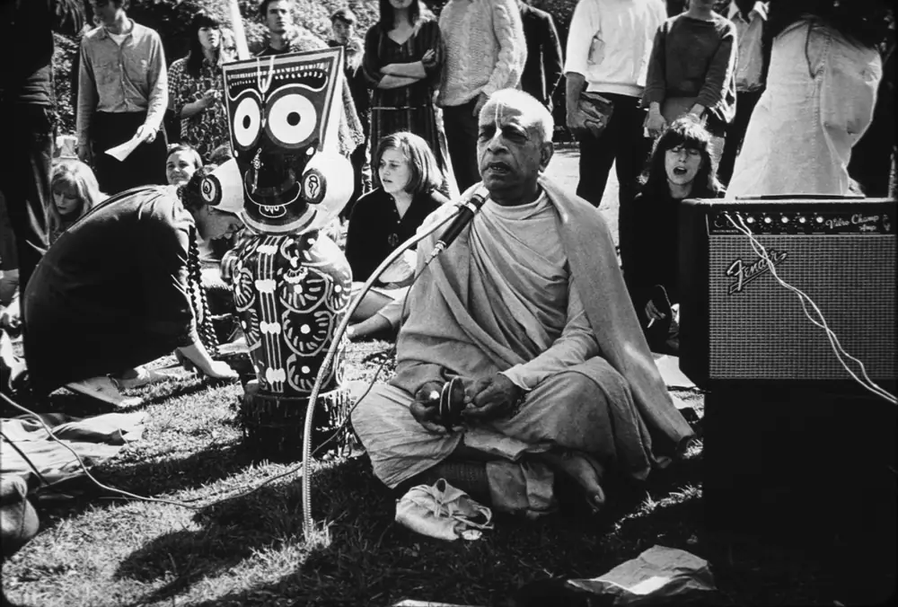
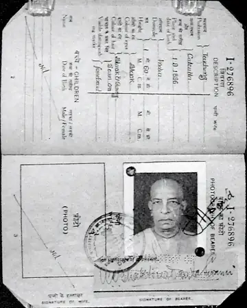
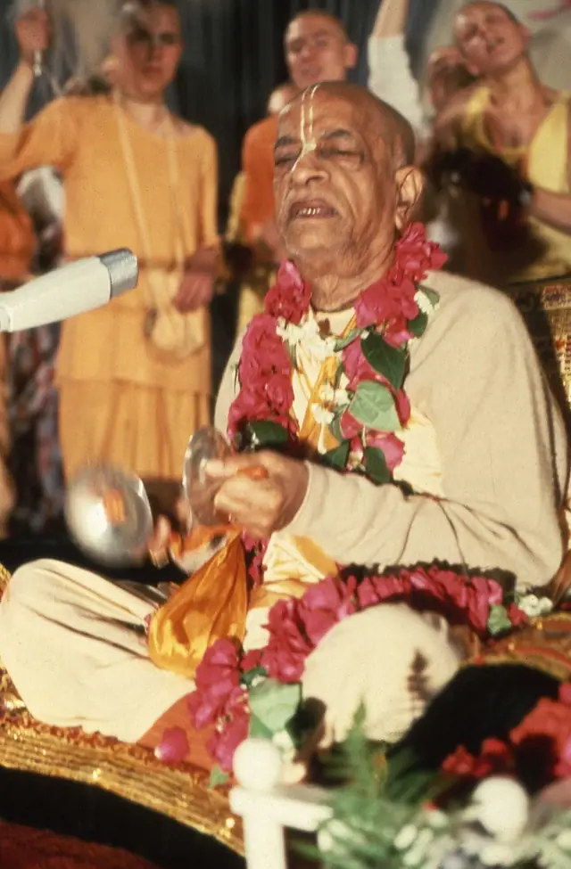

Photograph: Bhaktivedanta Swami with Jagannath in Golden Gate Park, February 1967.jpg, Mukunda Goswami, CC BY-SA 3.0 via Wikimedia Commons.
Vanipedia: the essence of Vedic knowledge
Śrīla Prabhupāda, Founder-Ācārya and Preeminent Śikṣā-Guru of the International Society for Krishna Consciousness.

Photograph: Bhaktivedanta Swami with Jagannath in Golden Gate Park, February 1967.jpg, Mukunda Goswami, CC BY-SA 3.0 via Wikimedia Commons.

Photograph: Prabhupada’s passport.jpg, Government of India, GODL-India via Wikimedia Commons.
Translated in 17 Languages
Source: Vanipedia, GBC Foundational Document.
Vanisource: his books, lectures, conversations and letters, the primary text.
Source: Vanisource, SB 3.28.6.
Vaniquotes: his words gathered by theme.
“Samadhi is not an artificial bodily state; …”
Source: SB 3.28.6, Translation and Purport (Vanisource). Entry in Vaniquotes.
Photograph: Prabhupada in Moscow 1971.tif, Samuel Speerstra aka Syamasundara Das, CC BY-SA 3.0 via Wikimedia Commons.
Vanimedia: audio, video and images.

Nectar Drops are short, focused audio excerpts of less than 90 seconds, drawn directly from Śrīla Prabhupāda’s recorded lectures, conversations, and morning walks.
Audio: 690905LE-HAMBURG_ND_01.mp3. Category: Nectar Drops from Srila Prabhupada (Vanipedia).
Photograph: Prabhupada singing (Germany 1974).jpg, Christian Jansen, CC BY 3.0 via Wikimedia Commons.
Vanipedia: the encyclopedia of Śrīla Prabhupāda’s words.
Welcome to Vanipedia, a dynamic, living encyclopedia of Śrīla Prabhupāda’s words (vani). We are building an unparalleled digital repository of his text, audio, video, and images, comprehensively compiling his teachings from every angle of vision.*
Text: Vanipedia, Main Page.


.jpg){kind=link}